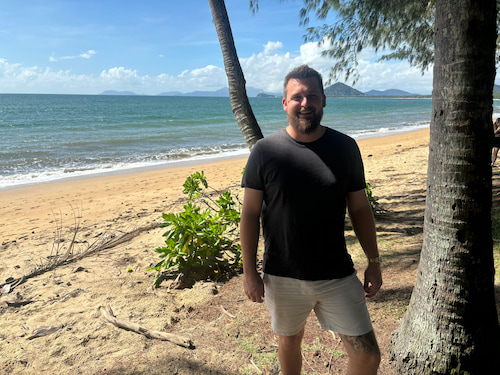

Dylan De Wit | WDD 130

Hi, my name is Dylan De Wit, I am from Ipswich, Australia located in the great state of Queensland! I have a wife called Jules and a dog called Lani. I am serving as my ward's clerk at church. I really enjoy programming and reading fiction (mostly fantasy). I also like to tinker with machines and motors. I have really liked creating this website so far and look forward to learning more about web development!